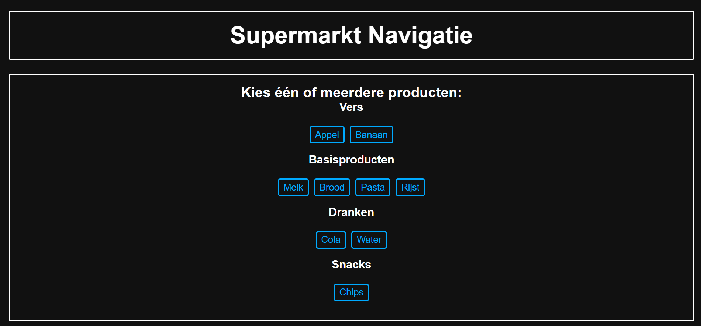
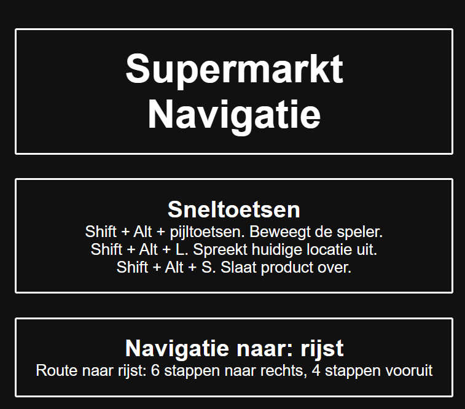
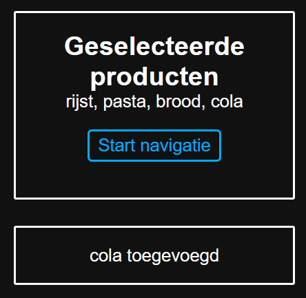

Supermarkt Navigatie
Details:
- Toegepaste skills: HTML, CSS, JavaScript, NVDA
- Datum: 30 maart 2026
- Duur: 5 weken (Parttime)
- Uitvoering: Team van 4

De opdracht
Voor de minor Web Design & Development hadden we het vak Human Centered Design waarin we voor 1 specifiek persoon een website moesten ontwerpen. Ik had een website gemaakt voor Berend (berend@berendconnect.net). Hij is blind en heeft een grote blinde vlek in het midden van zijn zicht. Alleen aan de randen kan hij nog vaag vormen en beweging onderscheiden. Om het web te navigeren maakt hij gebruik van een screenreader genaamd NVDA. De website is per week met hem getest tot het product dat het nu is geworden.
De uitvoering
Berend houdt zich beter met indoor navigation. Ik heb ervoor gekozen om mijn project daar op te baseren. In dit project ga je het proces langs van boodschappen halen in een supermarkt. De website is verdeeld over 2 pagina's. Op de eerste pagina kun je boodschappen selecteren en op de 2e pagina moet je deze boodschappen kunnen vinden in een grid. Aangezien deze website specifiek voor 1 persoon is ontworpen heeft de website expres een zwarte achtergrond met witte tekst en witte randen om alle secties. Verder kun je de hele website doorlopen met een toetsenbord en een screenreader zonder het beeld nodig te hebben.



Eigen reflectie: Dit was een interessant project om te doen aangezien deze ik specifiek met 1 persoon rekening hoefde te houden en met niemand anders. Daarnaast was het leuk om te kunnen testen met iemand die dit dagelijks ervaart en te zien wat zijn ervaring is met dit soort websites. Het ging verassend goed. Hij snapte snel wat hij kon doen en hoe dat moest.